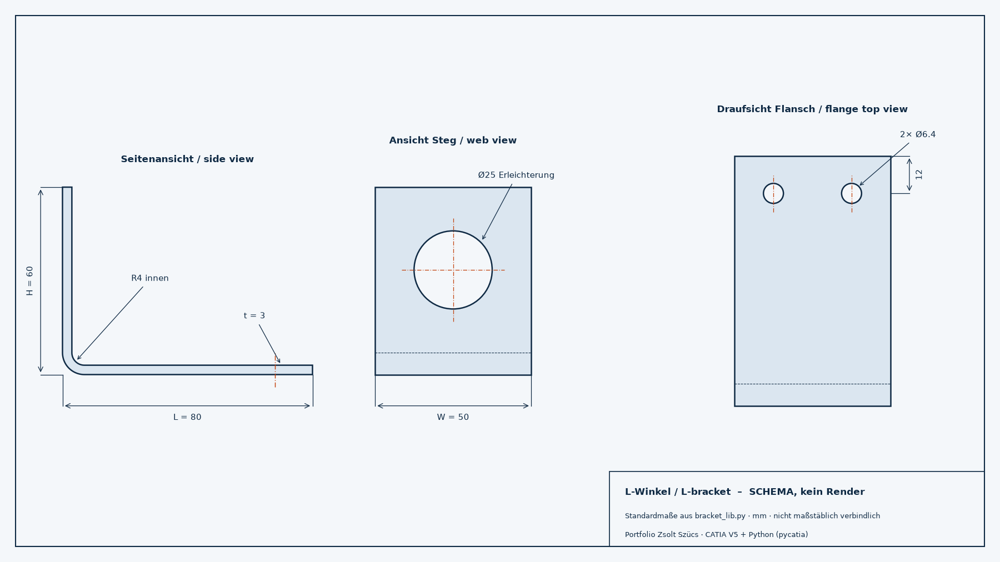

CATIA V5 Automatisierung mit Python und KICATIA V5 automation with Python and AI
Python-Skripte steuern CATIA V5 über die COM-Schnittstelle (Bibliothek pycatia) und erzeugen einen parametrischen Aluminium-L-Winkel im Luftfahrtstil. Beim Programmieren hat ein KI-Assistent bei API-Recherche, Codegerüst und Fehlersuche geholfen; konstruktive Entscheidungen und die Bewertung der Ergebnisse bleiben beim Ingenieur.Python scripts drive CATIA V5 through its COM interface (pycatia library) and build a parametric aluminium L-bracket in aerospace style. An AI assistant helped with API research, code scaffolding and debugging; design decisions and the evaluation of results stay with the engineer.
- Flansch, Steg, Biegeradien, zwei Bolzenlöcher und eine Erleichterungsbohrung
- Benutzerparameter und Formeln direkt im CATIA-Strukturbaum
- Parameterstudie mit 5 Varianten: Volumen, Masse und Schwerpunkt automatisch nach Excel, STEP-Export je Variante
- Zeichnungsableitung (A3) mit Vorderansicht, Draufsicht und Isometrie als PDF
- Flange, web, bend radii, two bolt holes and one lightening hole
- User parameters and formulas directly in the CATIA specification tree
- Parameter study with 5 variants: volume, mass and centre of gravity written to Excel automatically, STEP export per variant
- A3 drawing with front, top and isometric views, exported as PDF
- CATIA V5
- Python
- pycatia
- KBE
- openpyxl
- STEP
